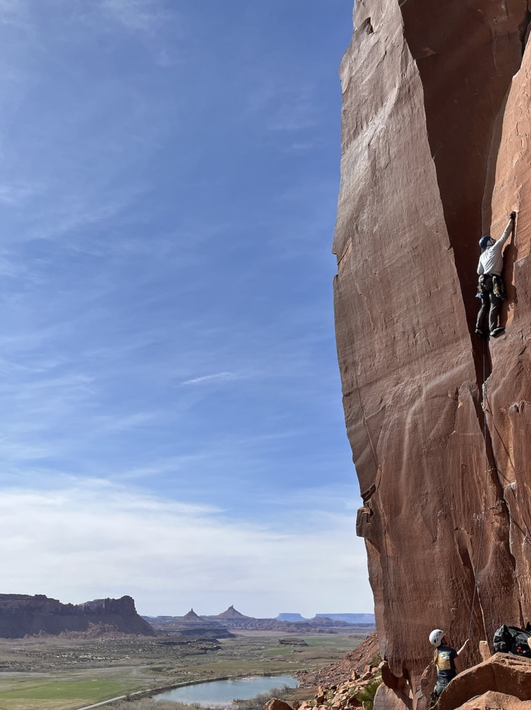

Faster paths to new medicines, where patients have few or none.
Closing the loop between design, synthesis, and data, with chemists steering.
A Michigander in New England, searching chemical space and granite (or schist!).
I'm an Associate Principal Scientist in Cheminformatics & AI Design at Alkermes.
I'm the chemistry point person between modeling, medicinal chemistry, and CRO teams, coupling medicinal chemistry judgment with machine learning, ultra-large virtual screening, and laboratory automation so that each experiment trains the next design cycle. Before Alkermes I ran direct-to-assay library synthesis at Relay Therapeutics, built reaction prediction and Bayesian optimization tools at Vertex, and developed data pipelines for robotic materials discovery at Haverford College.

Originally from Michigan, I now live in the greater Boston area. Most free days find me climbing somewhere in New England, out on a bike, or on a trail, with the occasional trip somewhere farther afield for an adventure that doesn't fit in a weekend. I love the stories behind the places we climb, and the shared work of caring for them.
I also volunteer with local Scout troops on outdoor adventures, and through the American Chemical Society’s Science Coaches program I partner with teachers to bring real chemistry into their classrooms. Both are the best reminder I know that people grow by doing hard things together, with a little guidance along the way.
Off the wall, you'll find me deep in a good book or a long climbing article, reading up on the history of the land I'm exploring, or tinkering with home-network projects and the occasional game. I'm also forever turning over questions from philosophy of mind: what consciousness is, how attention shapes a life, and how ideas have evolved over centuries of people asking the same questions. The thread through all of it is community, and building places where people show up for one another and connect a little more deeply.
A reliable discovery engine pairs fast, computer-aided design with human context and judgment. I've spent my career where chemistry, data science, and automation meet, working to make discovering medicines faster and less costly.
Design–make–test–analyze cycles set the pace of discovery. At Relay we cut cycle time from fifty days to seven, and I brought active learning into the design loop at both Relay and Alkermes.
Chemists, me included, drift toward familiar compounds and known moves. I pair traditional design with modern tools and build SAR systematically, so each round yields conclusions the team can trust.
The slow part is rarely the science. It's the connections between tools, teams, and partners, from CROs to academic groups, that make experiments faster to specify and compounds faster to deliver.
Models that drive design decisions fail in predictable ways. I build tools that track their error and retrain them, weigh competing objectives on the Pareto front, and carry that judgment into agentic workflows.
AI makes a new kind of medicinal chemist possible: one who oversees the whole loop instead of approving every step.